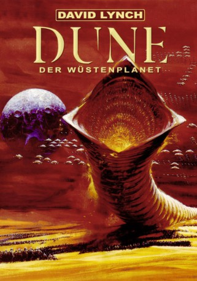

Alternativ: Dune
Auszeichnungen: für 1 Oscars nominiert
 
 IMDB-Wertung: 6.6 / 10
IMDB-Wertung: 6.6 / 10  Metascore:
Metascore: 
In einer fernen Zukunft entbrennt zwischen den großen Häusern ein erbitterter Kampf um den Wüstenplaneten Arrakis. Nur dort gibt es die wertvollste Substanz im ganzen Universum: das Spice. Opulente Verfilmung von Frank Herberts gleichnamigem Romanzyklus, die sich an den Kinokassen als Flop entpuppte.
Jahr: 1984
Dauer: 137 Minuten
FSK: 16
Land: USA Studio: Universal PicturesTonspuren:
Untertitel:
Auflösung: 1080p (1920x816) Größe: 5529 MB
Genre: Action, Sci-Fi, Abenteuer
Regisseur:  David Lynch
David Lynch
Drehbuch: Frank Herbert, David Lynch
Soundtrack: Toto
Darsteller:
 Francesca Annis als Lady Jessica
Francesca Annis als Lady Jessica Leonardo Cimino als The Baron's Doctor
Leonardo Cimino als The Baron's Doctor Brad Dourif als Piter De Vries
Brad Dourif als Piter De Vries José Ferrer als Padishah Emperor Shaddam IV
José Ferrer als Padishah Emperor Shaddam IV Linda Hunt als Shadout Mapes
Linda Hunt als Shadout Mapes Freddie Jones als Thufir Hawat
Freddie Jones als Thufir Hawat Richard Jordan als Duncan Idaho
Richard Jordan als Duncan Idaho Kyle MacLachlan als Paul Atreides
Kyle MacLachlan als Paul Atreides Virginia Madsen als Princess Irulan
Virginia Madsen als Princess Irulan Everett McGill als Stilgar
Everett McGill als Stilgar Kenneth McMillan als Baron Vladimir Harkonnen
Kenneth McMillan als Baron Vladimir Harkonnen Jack Nance als Nefud
Jack Nance als Nefud Jürgen Prochnow als Duke Leto Atreides
Jürgen Prochnow als Duke Leto Atreides Patrick Stewart als Gurney Halleck
Patrick Stewart als Gurney Halleck Dean Stockwell als Doctor Wellington Yueh
Dean Stockwell als Doctor Wellington Yueh Max von Sydow als Doctor Kynes
Max von Sydow als Doctor Kynes Alicia Witt als Alia
Alicia Witt als Alia Sean Young als Chani
Sean Young als Chani David Lynch als Spice Worker , uncredited
David Lynch als Spice Worker , uncreditedDatei: X:\1984\Dune - Der Wüstenplanet (1984, FSK16, 1920x816) 3D.mkv seit 19.11.2015
Festplatte: HD 1980-1986
 Es gibt insgesamt 46 Filme in der Gruppe '1984'
Es gibt insgesamt 46 Filme in der Gruppe '1984'